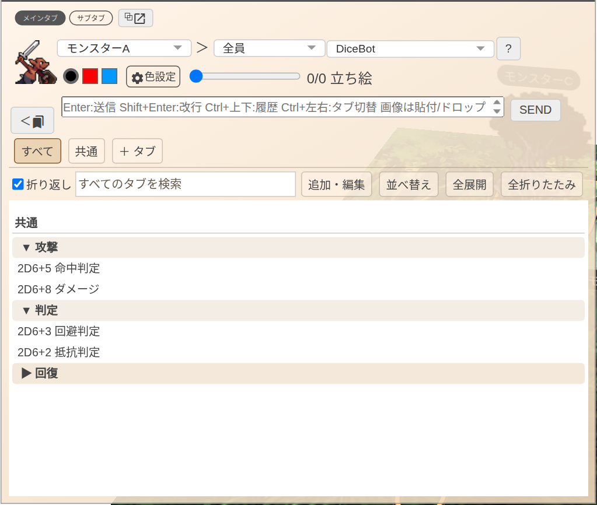
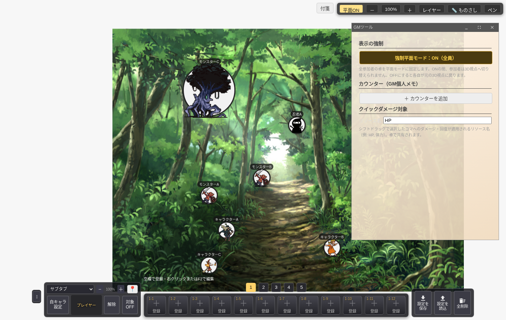
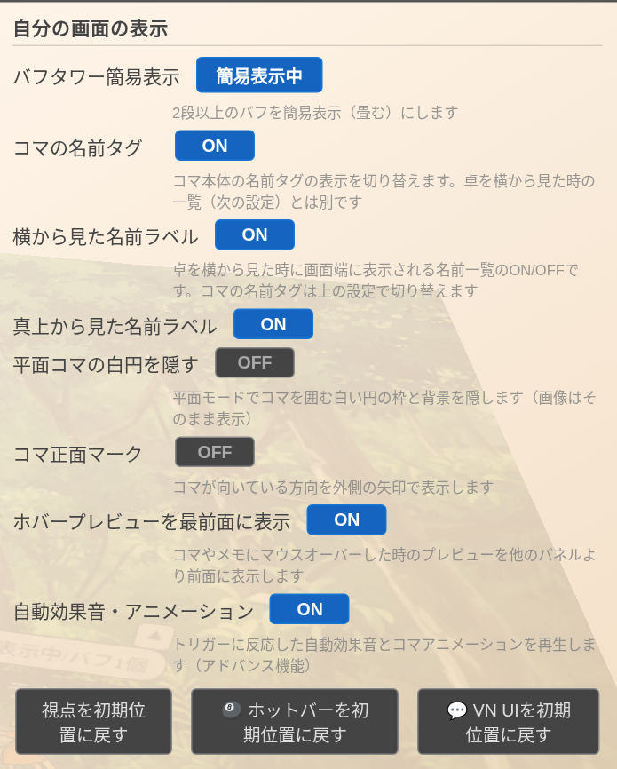
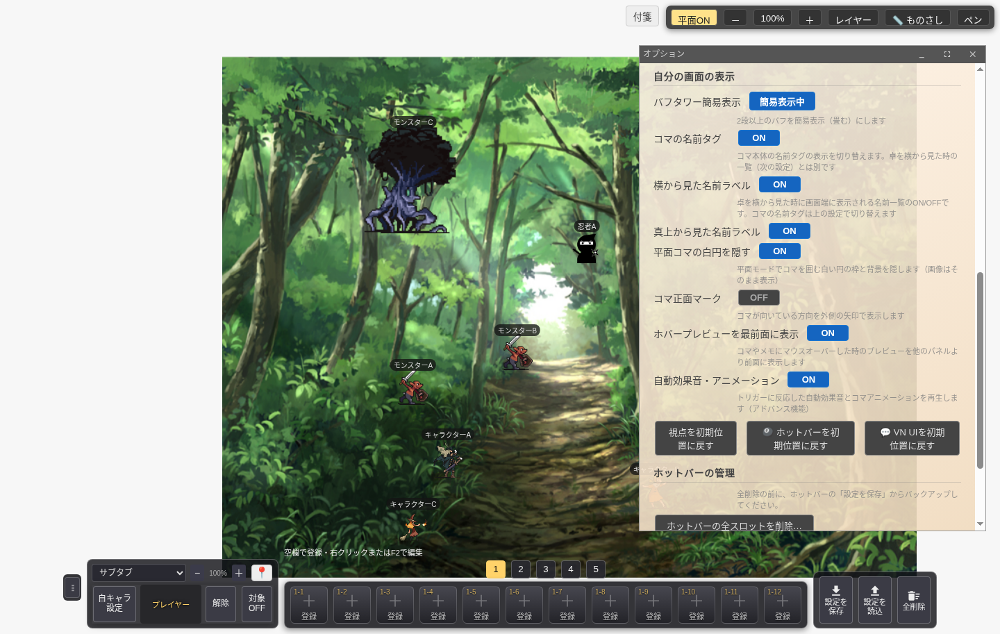
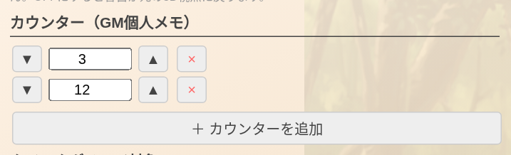
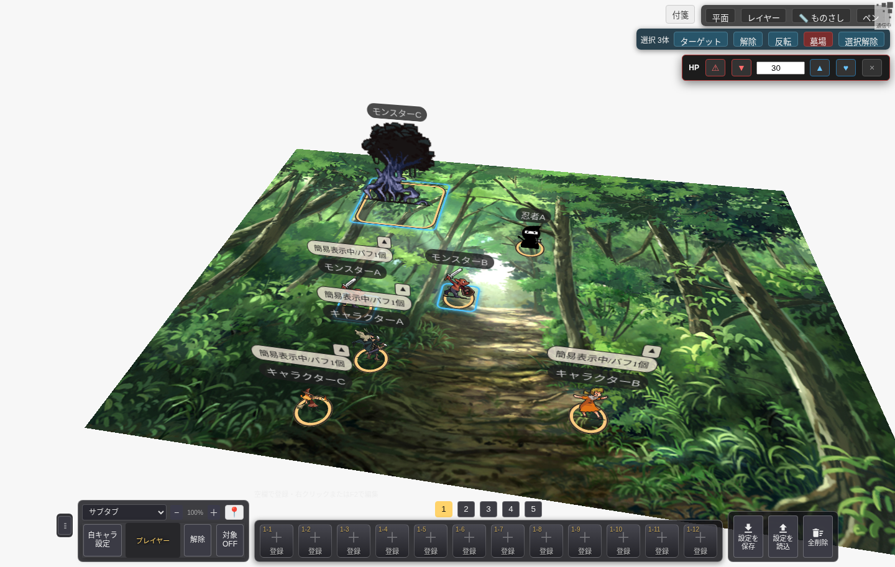
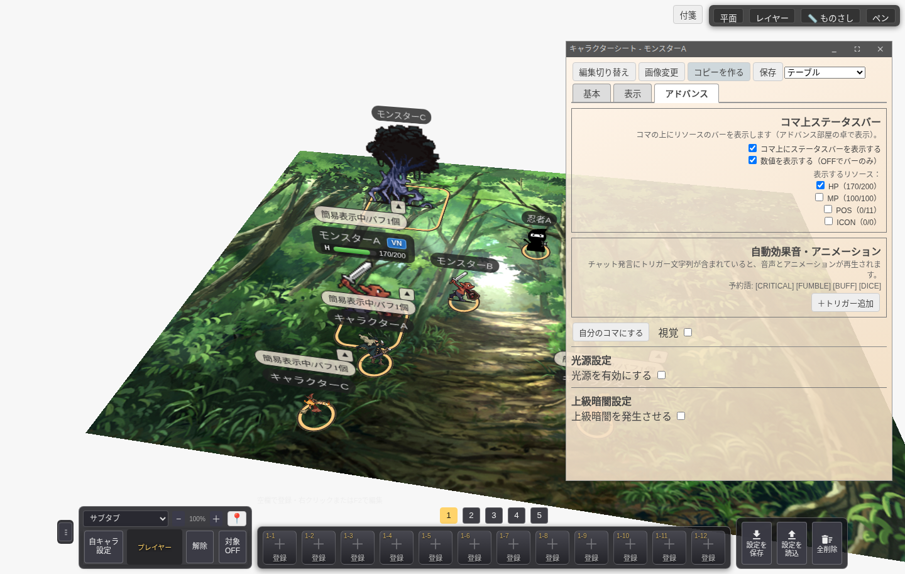

卓の操作を、もっと快適に。
GMツール・ステータスバー・みんなで見られるものさしを追加しました。
チャットパレットの整理から、平面表示のそろえ方、複数コマのHP管理まで。v2.3の8つの変更を実際の画面でご紹介します。
更新後はページを再読み込みしてご利用ください。ステータスバーとものさしはアドバンスルーム限定です。GMツールはGM宣言した方が利用できます。
01
チャットパレットをコンパクトに
行は24px、並べ替えハンドルは必要な時だけ表示。区切りセクションの折りたたみに対応し、通常・VN両方のチャットパレットが見やすくなりました。


02
全員の視点を平面にそろえる
部屋作成時の「入室時から強制的に平面」で、参加直後から全員を平面表示に。GMツールからセッション中のON/OFFも切り替えられます。


03
名前の表示を別々に設定
コマ本体の名前タグと、横から見た時に画面端へ表示する名前一覧を分離。オプションからそれぞれ独立してON/OFFできます。


04
平面コマの白円を非表示に
オプションの「平面コマの白円を隠す」で、画像をそのままに白い背景と枠を非表示にできます。


05
GM専用の数値カウンター
GMツールに複数のカウンターを追加。ボタン・直接入力で数値を管理でき、値はGMのブラウザ内に保存されます。参加者には共有されない個人メモです。


06
選択コマへダメージ・回復を一括適用
Shiftドラッグで複数コマを選択するとクイックバーを表示。入力ダメージ、1ずつの増減、全回復に対応します。GMツールで「HP」「体力」など対象リソース名を設定でき、結果はチャットに通知します。


07
名前の浮き枠にステータスバー
【アドバンス限定】キャラシートのアドバンスタブでバーのON/OFF・表示するリソース・数値表示を設定。名前・VNボタンと同じ浮き枠の下段に表示し、参加者間で同期します。バーだけを見せる設定にも対応しています。

